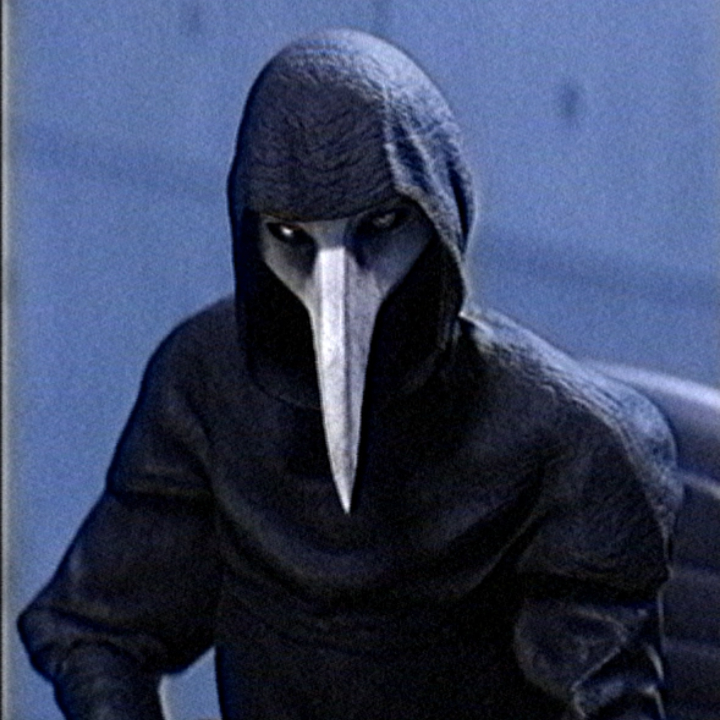
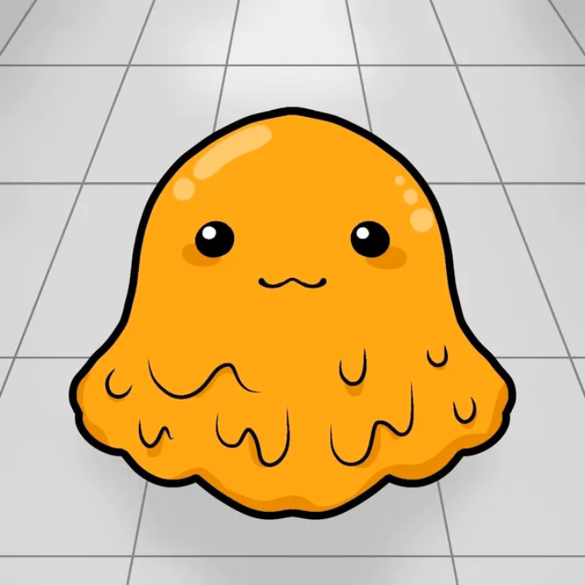
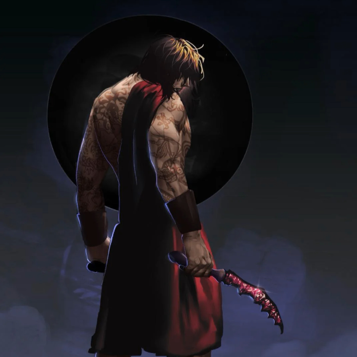
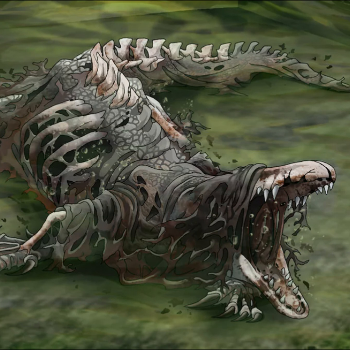

[ЦЕНТРАЛЬНЫЙ СПРАВОЧНИК АНОМАЛИЙ // PROJECT: KETER]
Доступ к файлам и фото-отчетам разблокируется автоматически при прохождении.
• SCP-173 («Скульптура»)

Класс: Евклид. Подвижна только вне зоны видимости. Ломает шею у основания черепа.
[ФОТО-МАТЕРИАЛ ЗАБЛОКИРОВАН
Встретьте объект на Уровне 1]
Встретьте объект на Уровне 1]
• SCP-049 («Чумной доктор»)

Класс: Евклид. Пытается «вылечить» Поветрие. Его касание смертельно.
[ФОТО-МАТЕРИАЛ ЗАБЛОКИРОВАН
Встретьте объект на Уровне 1]
Встретьте объект на Уровне 1]
• SCP-999 («Щекоточный монстр»)

Класс: Безопасный. Оранжевое желе. Вызывает у существ приливы эйфории.
[ФОТО-МАТЕРИАЛ ЗАБЛОКИРОВАН
Найдите объект на Уровне 0]
Найдите объект на Уровне 0]
• SCP-096 («Скромник»)

Класс: Евклид. Впадает в ярость, если посмотреть на его лицо. Уничтожает цель.
[ФОТО-МАТЕРИАЛ ЗАБЛОКИРОВАН
Встретьте объект на Уровне 2]
Встретьте объект на Уровне 2]
• SCP-076-2 («Авель»)

Класс: Кетер. Бессмертный воин из куба. Материализует оружие из разломов.
[ФОТО-МАТЕРИАЛ ЗАБЛОКИРОВАН
Выживите при штурме на Уровне 2]
Выживите при штурме на Уровне 2]
• SCP-682 («Неуязвимая рептилия»)

Класс: Кетер. Обладает абсолютной регенерацией. Ненавидит всю жизнь.
[ФОТО-МАТЕРИАЛ ЗАБЛОКИРОВАН
Доберитесь до Сектора Кетер]
Доберитесь до Сектора Кетер]